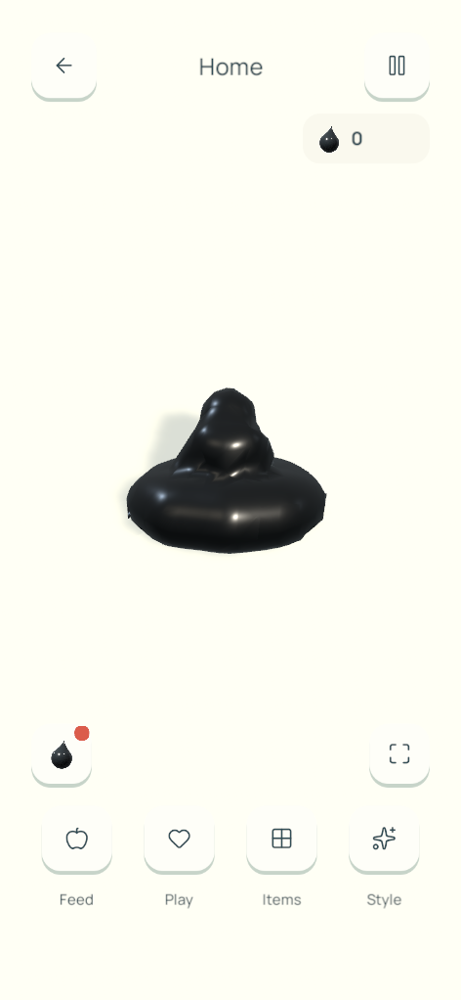
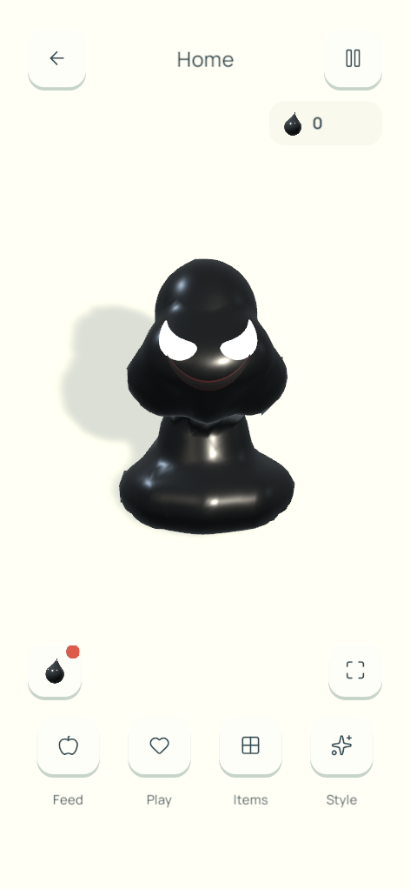
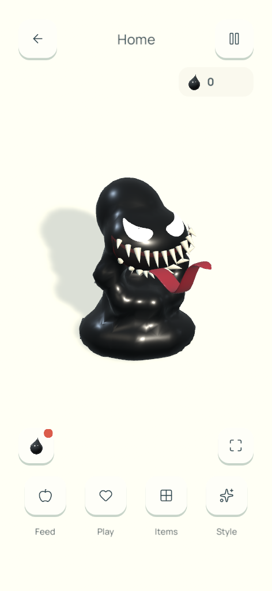
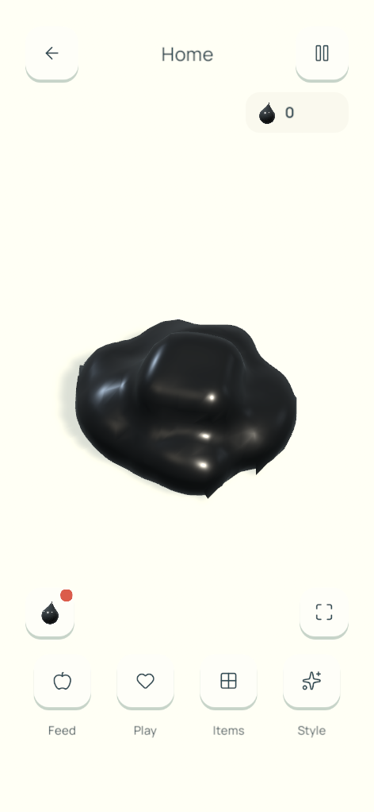
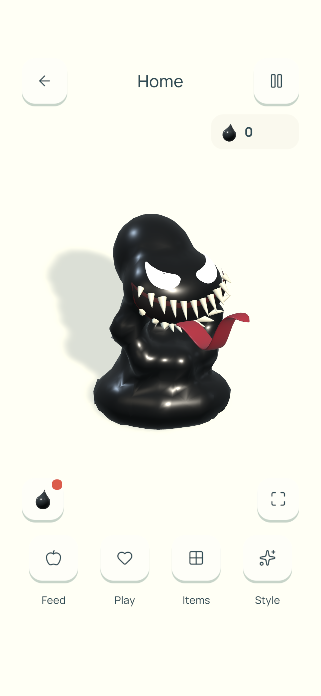

COGHE · UNITY RUNTIME · 15/10/2026
Một cái đầu mọc lên từ vũng nhầy.
COghe tụ người, nhô đầu lên rồi mới hình thành mắt và miệng. Nanh lộ dần, lưỡi rộng gấp đôi uốn theo nhịp sóng của bản cũ rồi thu lại; đầu tan xuống phần nhầy. Không còn ngực, vai hoặc tay người.
Home · nhìn gần
Giao diện và animation trong bản Mac thật.Main Menu
Dùng chung animation và chất liệu.

01 · Khối nhầy phồng lên

02 · Đầu và mắt hình thành

03 · Nhe nanh, thè lưỡi

04 · Tan về COghe

Ảnh trực tiếp từ iPhone 13 Pro Max
Bản cuối đã cài lên máy · 1284 × 2778 · lưỡi rộng ×2.
Video không âm thanh, ghép từ khung hình Unity ở 30 fps để xem animation. Bản lưỡi uốn mềm cuối cùng: iPhone 13 Pro Max đạt 60 FPS qua 20 lần biến hình (3 phút 24 giây), p95 16,96 ms, không có frame trên 33,3 ms. Trước đó phần tối ưu cũng đã chạy 15 phút. CPU dựng da và mặt giảm khoảng 20% so với baseline; baseline trên iPhone vốn đã đạt 60 FPS. Chuyển động chỉ tác động lớp da; không đổi lực, collider, tiến độ hay quyền mở tính năng.
Số đo iPhone và giới hạn ·
Chi tiết kiểm chứng ·
Kết quả test.